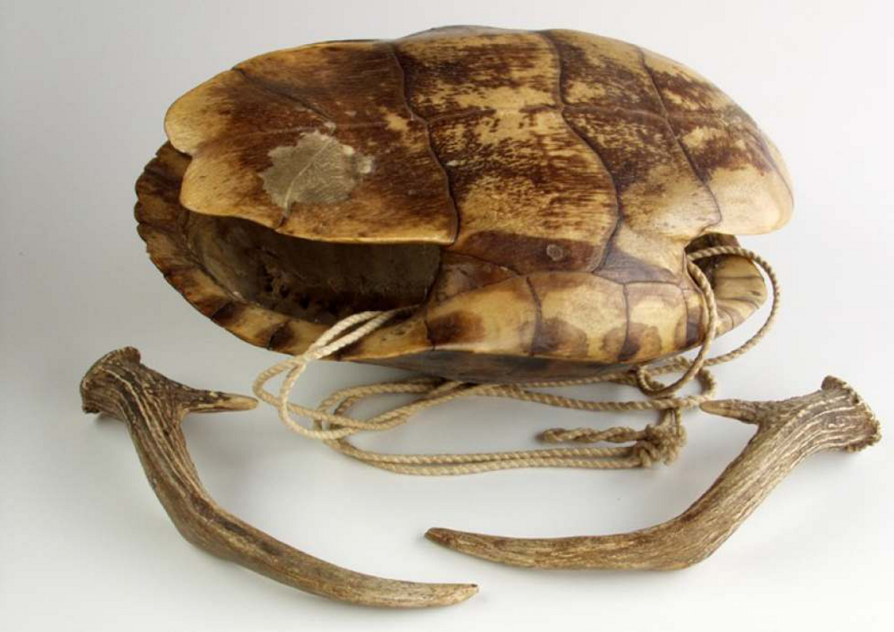

Sounding turtles of Central America
Sketch 016
Home > Blog A Musician's Log > Sketch 016
Turtle shells have been used for a long time in the five continents as raw material for the elaboration of different types of musical instruments.
In Panama, the Emberá or Ëpërá people (Emberá-Wounaan Region and Darién Province) play the chimiguí, a shell struck with a wooden drumstick, while the Ngäbe or Guaymí (Ngäbe-Buglé Region and Bocas del Toro, Veraguas and Chiriquí) use the ñele, which has wax smeared on the edge of the shell and is rubbed with the edge of the hand, from the wrist to the tips of the fingers. The latter, also called guelekuada or seracuata, is one of the main instruments of the balsería or krun (a celebration that facilitates the meeting of the different communities) and is associated with a myth referring to the first of these rituals, according to Gonzalo Brenes Candanedo. The same author points out that the Kuna people use the morrogala shell in the ceremonial dance for the pubescent girl's haircut.
Further north, the Garífuna people of the Caribbean coasts (Belize, Guatemala, Nicaragua and Honduras) use a similar item, the taguel bugudura. Something similar occurs with the neighboring Miskito of the Honduran Caribbean and their kuswataya, literally "freshwater turtle skin", which is also performed using a drumstick, a long nail, or occasionally a deer antler. Nearby, in the Honduran Mosquitia, the Tawahka use the cuahuntak.
Throughout Guatemala, the tucutítutu or tucutícutu, an onomatopoeic name for the percussed turtle shell, is heard especially during "las Posadas", popular festivals that take place the nine days before Christmas, accompanying the interpretation of Christmas carols.
More information about these sound artifacts can be found in the free-access digital book Turtle shells in traditional Latin American music, accessible through the "Digital books on music. Series 1" section.